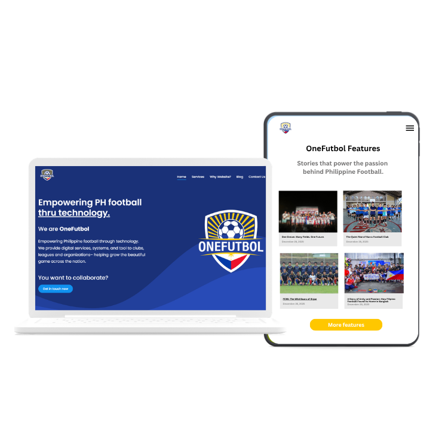
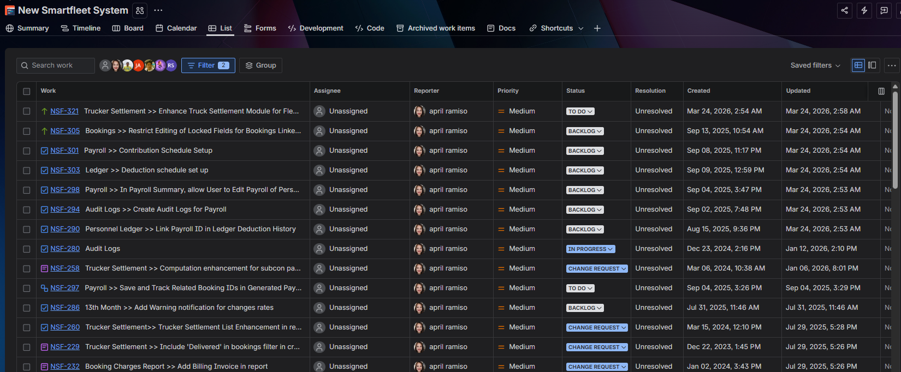
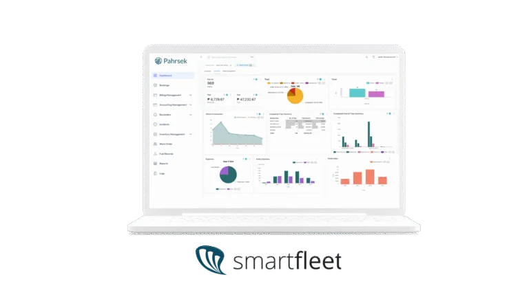
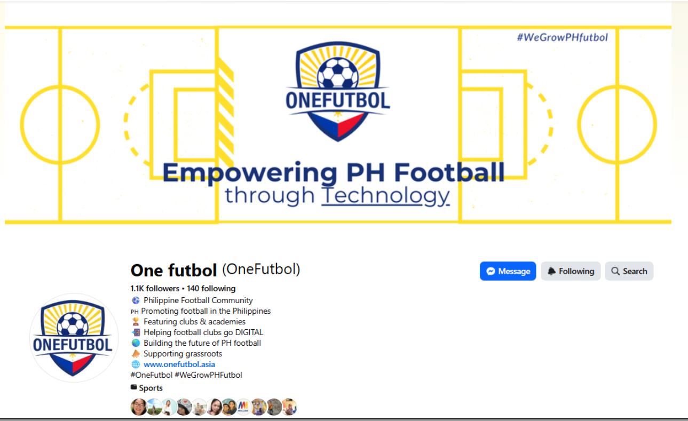
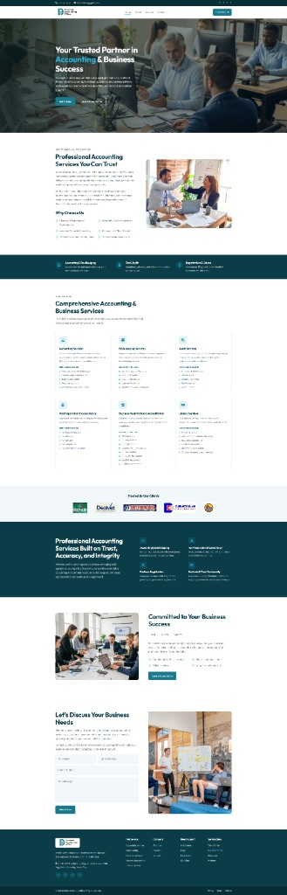
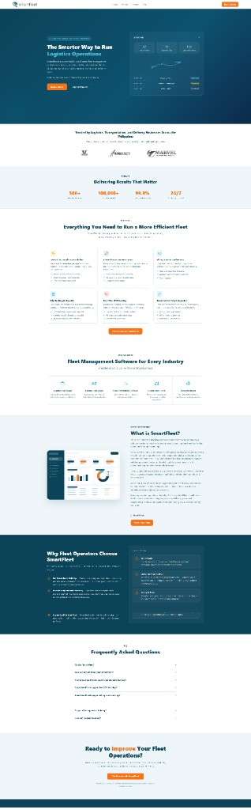
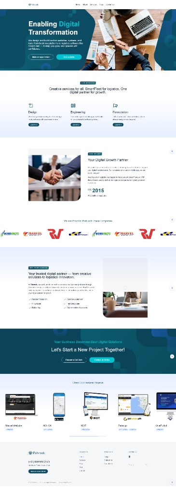
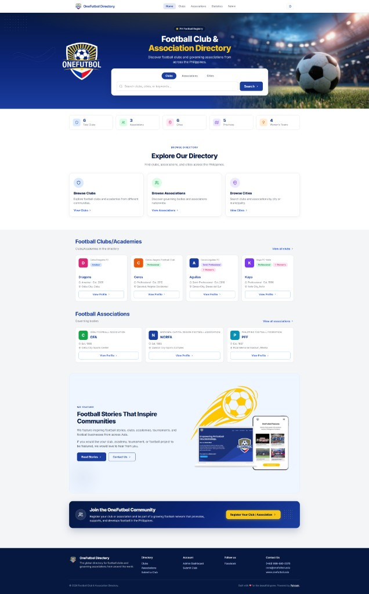

Administrative Support
Managing tasks, creating reports, and maintaining organized workflows.
Hi, I'm
Data Entry & Admin Support | Software Tester | WordPress Support | Tech Support
Detail-focused, reliable, and tech-savvy Virtual Assistant with 6+ years of experience in software QA, admin support, and digital operations. I help businesses stay organized, manage tasks efficiently, and keep systems running smoothly behind the scenes.

Who I Am
I'm based in Davao City, Philippines, with over 6 years of experience in the tech industry as a Software Tester and Product Development professional.
My work has focused on ensuring system quality, supporting team operations, and helping projects run smoothly from testing to deployment.
I've worked closely with teams to manage tasks, coordinate with clients, create reports, and maintain organized workflows, skills that translate well into virtual assistance and administrative support.
I also have hands-on experience in bug tracking, basic UI improvements, and updating website content using WordPress.
"If you're looking for someone dependable, detail-oriented, and easy to work with, I'd be happy to support you and your business."
Now, I'm transitioning into the Virtual Assistant space, where I can use my strengths in organization, communication, and digital support. I enjoy working behind the scenes, keeping tasks on track, maintaining clean and structured systems, and helping businesses stay efficient and organized.
Managing tasks, creating reports, and maintaining organized workflows.
Quick to learn new tools, systems, and workflows in fast-paced environments.
Experience in software testing, bug tracking, and supporting system improvements.
Basic website updates, content editing, and page management.
Creating simple and clean visuals using Canva and Figma.
Academic Background
University of Mindanao
UM Matina Campus - Davao City, Philippines - Graduated 2017
How Can I Help?
My Journey
Pahrsek Inc.
Pahrsek Inc.
Pahrsek Inc.
Detailed Online Technology
My Toolkit
Comfortable with the tools modern teams rely on, from spreadsheets and design to task management and testing.
Featured Projects

Managed the OneFutbol website to showcase and support the football community by sharing club journeys and events. Set up the site using a template, updated content, and posted blogs.
onefutbol.asia WordPress / CMS / Blogging
Executed test cases, documented bugs, coordinated fixes with developers, and supported system improvements.
QA / Jira / Trello
Monitored client requests, tracked task progress, updated statuses, and coordinated action items through Jira workflows.
Jira / Task Management
Supported client-facing logistics platform work including QA testing, system enhancements, dashboard monitoring, and coordination for bookings, billing, and fleet operations.
Logistics / QA / System Support
Managed football-related content and community engagement through social media and website updates for OneFutbol.
facebook.com/onefutbol.asia Content Support / Social Media
Created a professional business website for Doromol Accounting Office using HTML, with service pages, company information, and a contact form.
app.doromalaccounting.buzz Website Development / HTML
Created a modern fleet management landing page with features, pricing, FAQs, and call-to-action sections for logistics businesses.
smartfleet.ph Website Development / Landing Page
Built a templated corporate website for Pahrsek featuring digital transformation services, SmartFleet offerings, and featured project showcases.
pahrsek.com Website Development / Template
Created a football club and association directory with search, club listings, association profiles, and community registration features.
hub.onefutbol.asia Website Development / DirectoryOpen To Work
Looking for a reliable and detail-oriented Virtual Assistant? I'm here to help your business stay organized, handle daily tasks, and keep your systems running smoothly.